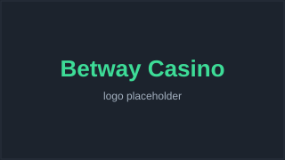
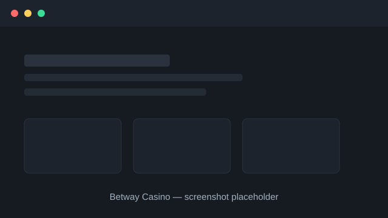

Betway Casino Review 2026

Last updated: · By Michael Turner, Senior Casino Analyst
Verdict
Betway Casino scores 4.4 out of 5. It is best for players who want casino and sports betting under one trusted, well-marketed roof with a strong live-dealer offering. Its main drawback is that the casino can feel secondary to the heavily promoted sportsbook.
Betway Casino quick facts
| Overall rating | |
|---|---|
| Founded | 2006 |
| Operator | Super Group (SGHC Ltd) |
| Headquarters | Malta |
| Licences | UK Gambling Commission & Malta Gaming Authority |
| Key features | 500+ slots, dedicated live casino, integrated sportsbook |
| Welcome bonus | New-player casino welcome offer |
| Best for | Combined sports and casino play |
Betway Casino pros and cons
Pros
- Well-known, heavily regulated global brand
- Combined single account for casino and sports betting
- Strong live-casino suite from top providers
- Operated by Super Group, a large listed gaming company
- Polished apps for iOS and Android
Cons
- Casino library is smaller than some dedicated casino rivals
- Marketing leans heavily toward sports rather than casino
- Bonus terms vary widely by market
Is Betway Casino safe and legit?
Yes. Betway Casino is operated by Super Group (SGHC Ltd), a publicly listed gaming company, and is licensed by the UK Gambling Commission and Malta Gaming Authority. That places it among the well-regulated, lower-risk operators in the market.
Betway has run since 2006 and sponsors major sports teams and events, giving it a high public profile that comes with close regulatory and media scrutiny. Games are independently tested for fairness.
Players can verify the licence in the footer, must pass identity checks before withdrawing, and have full access to deposit limits, reality checks and self-exclusion.
Can you bet on sports and play casino at Betway?
Yes. Betway combines a full sportsbook and casino in a single account and wallet, so you can switch between betting on sports and playing slots or live tables without transferring funds. This is one of Betway's main strengths.
For players who enjoy both products, the shared wallet and single login are genuinely convenient, and promotions sometimes span both sides of the site.
Casino-only players still get a complete experience, though the brand's marketing and homepage tend to foreground sports betting.
What bonus does Betway Casino offer?
Betway Casino offers a new-player welcome bonus, usually a deposit match on your first casino deposit, separate from any sports offer. Exact values and wagering requirements vary by country and change often, so check the live promotions page first.
Confirm the headline match, minimum deposit and wagering multiplier for the casino welcome offer in your region.
Because Betway runs separate sports and casino promotions, make sure you opt in to the correct one for the product you intend to play.
How fast are Betway Casino withdrawals?
Betway processes withdrawals within standard industry times. E-wallet payouts are typically completed within one to two days of verification, while card and bank transfers usually take two to five business days depending on the method.
As always, uploading identity documents before your first withdrawal avoids the most common source of delay.
Confirm exact processing windows per payment method on the Betway banking page for your country.
What games does Betway Casino have?
Betway Casino offers hundreds of slots, a solid range of table games and a strong live casino with dedicated tables. Content comes from major studios including Microgaming, Evolution and Pragmatic Play, covering jackpots, classics and game shows.
The live casino is a highlight, with branded Betway tables and a range of stakes, streamed in HD around the clock.
While the total library is smaller than some casino-first brands, it covers all the mainstream categories most players want.
What payment methods and support does Betway Casino offer?
Betway Casino supports the standard range of deposit and withdrawal options, typically including debit cards, popular e-wallets and bank transfer, with secure, encrypted processing. Customer support is available via live chat and email, backed by a help centre covering common account, payment and bonus questions.
Before you deposit, check which methods are available in your country and whether any carry fees or slower processing times. E-wallets are usually the quickest choice for both deposits and withdrawals, while bank transfers take longest.
Live chat is the fastest route for an urgent issue, while email suits non-urgent queries where you want a written record. We judge Betway Casino's support on both availability and the quality of its answers, not just how quickly someone replies.
Betway Casino lobby at a glance

How Betway Casino compares to alternatives
Not sure Betway Casino is the right fit? Here is how it stacks up against two strong alternatives. For the full picture, see our side-by-side comparison of every casino.
| Casino | Rating | Founded | Best for |
|---|---|---|---|
| Betway Casino This review | 2006 | Combined sports and casino play | |
| Bet365 Casino | 2000 | Live casino and fast, reliable payouts | |
| LeoVegas | 2011 | Mobile-first play and slick app experience |
How we tested Betway Casino
We assessed Betway Casino using our standard six-criteria framework: licensing and safety, payout speed, bonus fairness, game range, mobile experience and support. We verified the licence against the regulator's public register, read the bonus terms in full and checked the cashier and help options first-hand.
Our overall score of 4.4/5 reflects how those factors balance out for a typical player in our audience. The best casino for you depends on what you value most, so use our comparison table to weigh Betway Casino against every alternative we review. You can read the full framework on our methodology page.
Betway Casino FAQ
Is Betway Casino legit?
Yes. It is operated by the listed Super Group and licensed by the UK Gambling Commission and Malta Gaming Authority.
Can I use one account for Betway sports and casino?
Yes. Betway uses a single account and wallet across its sportsbook and casino.
What is the Betway Casino welcome bonus?
A new-player casino deposit match, separate from sports offers. Amounts and wagering vary by country.
How long do Betway withdrawals take?
E-wallets typically take one to two days after verification; cards and bank transfers two to five business days.
Does Betway Casino have live dealer games?
Yes, a strong live casino with branded tables and game shows streamed in HD 24/7.
Does Betway have a mobile app?
Yes, polished apps for iOS and Android plus a mobile browser site.
Sources & references
Licensing and safer-gambling facts in this review can be checked against the following public sources:
- UK Gambling Commission public register — https://www.gamblingcommission.gov.uk/public-register
- Malta Gaming Authority licensee register — https://www.mga.org.mt/
- Super Group (SGHC) investor information — https://investors.sghc.com/